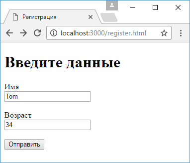

POST-запросы и отправка форм
При оправке каких-то сложных данных обычно используются формы.
Рассмотрим, как получать отправленные данные в Express.
Для получения данных форм из запроса необходимо использовать специальный пакет body-parser.
Поэтому вначале добавим его в проект с помощью команды
npm install body-parser --save
Определим в проекте в папке public новый файл register.html:
<!DOCTYPE html>
<html>
<head>
<title>Регистрация</title>
<meta charset="utf-8" />
</head>
<body>
<h1>Введите данные</h1>
<form action="/register" method="post">
<label>Имя</label><br>
<input type="text" name="userName" /><br><br>
<label>Возраст</label><br>
<input type="number" name="userAge" /><br><br>
<input type="submit" value="Отправить" />
</form>
</body>
<html>
Здесь определены два поля для ввода имени и возраста пользователя.
После нажатия на кнопку данные будут уходить по адресу "/register".
В файле app.js определим следующий код:
var express = require("express");
var bodyParser = require("body-parser");
var app = express();
// создаем парсер для данных application/x-www-form-urlencoded
var urlencodedParser = bodyParser.urlencoded({extended: false});
app.use(express.static(__dirname + "/public"));
app.post("/register", urlencodedParser, function (request, response) {
if(!request.body) return response.sendStatus(400);
console.log(request.body);
response.send(`${request.body.userName} - ${request.body.userAge}`);
});
app.get("/", function(request, response){
response.send("<h1>Главная страница</h1>");
});
app.listen(3000);
Прежде всего для получения отправленных данных необходимо создать парсер:
var urlencodedParser = bodyParser.urlencoded({extended: false});
Поскольку данные отправляются с помощью формы, то для создания парсера применяется функция urlencoded().
В эту функцию передается объект, устанавливающий параметры парсинга.
Значение extended: false указывает, что объект - результат парсинга будет представлять набор пар ключ-значение, а каждое значение может быть представлено в виде строки или массива.
Так как данные отправляются с помощью метода POST, то для обработки определяем функцию app.post("/register",...).
Первый параметр функции - адрес, на который идет отправка - "/register".
Второй параметр - выше созданный парсер. Третий параметр - обработчик:
app.post("/register", urlencodedParser, function (request, response) {
if(!request.body) return response.sendStatus(400);
console.log(request.body);
response.send(`${request.body.userName} - ${request.body.userAge}`);
});
Для получения самих отправленных данных используем выражения типа request.body.userName, где request.body инкапсулирует данные формы, а userName - ключ данных, который соответствует значению атрибута name поля ввода на html-странице:
<input type="text" name="userName" />
Запустим приложение и обратимся к странице register.html:
После отправки введенные данные будут получены в функции app.post("/register",...), которая выведет результат обработки: